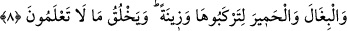

İNSAN, KÂİNAT VE
HAYVÂNÂTIN YARATILIŞI
3. (Allah) gökleri ve yeri hak ile yarattı. O, onların koştukları ortaklardan
münezzehtir.
4. O, insanı bir damla sudan yarattı. Fakat bakarsın ki (insan) Rabbine apaçık bir
hasım oluvermiştir.
5. Hayvanları da O yarattı. Onlarda sizin için ısıtıcı (şeyler) ve birçok faydalar
vardır. Onlardan bir kısmını da yersiniz.
6. Ayrıca sizin için onlarda akşamleyin getirirken, sabahleyin salıverirken bir
güzellik (bir zevk) vardır.
7. Bu hayvanlar sizin ağırlıklarınızı, ancak güçlüklere katlanarak varabileceğiniz
bir memlekete taşırlar. Şüphesiz Rabbiniz çok şefkatli, pek merhametlidir.
8. Atları, katırları ve eşekleri binmeniz ve (gözlere) ziynet olsun diye (yarattı).
Allah şu anda bilemeyeceğiniz daha nice (nakil vâsıtaları) yaratır.
Allah “gökleri ve yeri” yâni göğe âid ulvî cisimleri ve yere âid süflî varlıkları “hak
ile” boş yere ve hesapsızca değil de hikmetle ve bir nizâm içerisinde “yarattı.” Ne
güzel söylenmiştir:
Kâinât ancak bir hayaldir,
Hakîkatte ise o haktır.
Denilir ki, Allah Teâlâ yeryüzünü yaratmadan önce yerin tamamı su idi. Suyun köpüğü
Kâbe’nin bulunduğu yerde toplandı ve kum yığını şeklinde kırmızı bir tepe oluştu. Bu
pazar günü vuku buldu. Sonra suyun buharı duman şeklinde göğe doğru yükseldi. Yer ile
gök arasında 500 yıllık bir mesâfe vardı. Doğu ile batı arasında da aynı uzaklık vardı.
Daha sonra Allah yeşil bir inci var etti ve ondan da göğü yarattı. Pazartesi günü de ayı,
güneşi ve yıldızları yarattı. Sonra yeryüzünü kırmızı tepenin altına yaydı.